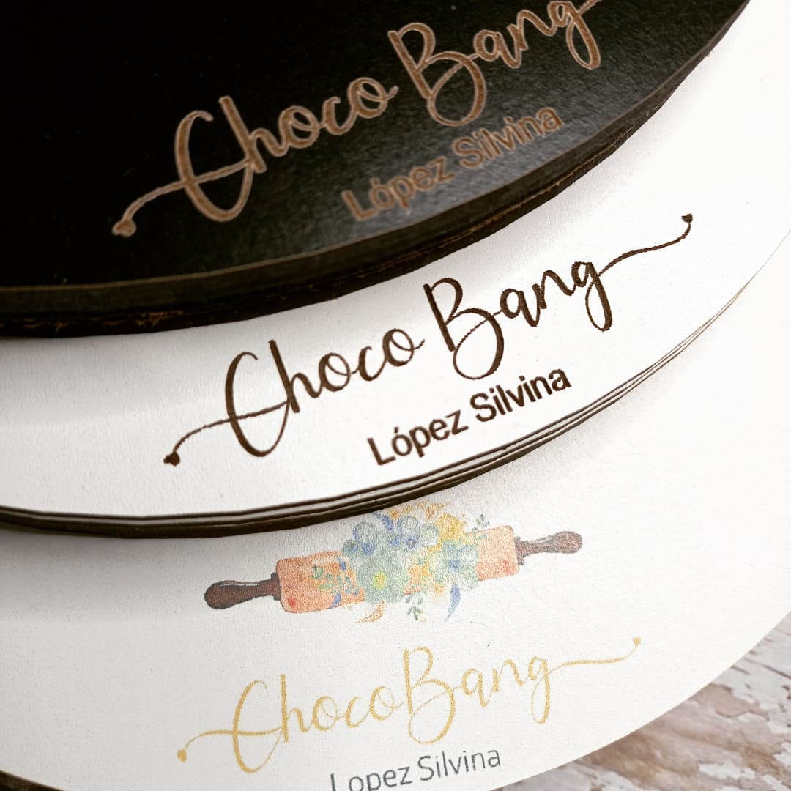

Servicios de Grabados Láser
La utilización de un láser para grabados es una tecnología innovadora que permite grabados permanentes. Ningún sistema desarrollado hasta el momento logra ni siquiera asemejarse a los resultados obtenidos por el mismo. El marcado láser tiene una excelente durabilidad, es resistente a ácidos, imborrable y ecológico.
- Tráenos tu producto o consulta stock. Recordá que la máquina no pinta sino que decapa, contrastando el color bajo el material con el de la superficie.
- No hay límite para grabar: diseño, texto, gráficos fotos. Dependerá del área del producto en cuestión. Consúltanos en que formato de archivo o bien ,Nosotros lo Diseñamos...”.

Maderas: Consiga cortes y grabados precisos con láser en madera contrachapada, DM, madera de balsa, etc.

Base para tortas en fibrofacil , grabado y corte.

Vidrio y Acrílico: Cree grabados en objetos de vidrio y acrílicos, como vasos, botellas o copas con láser.